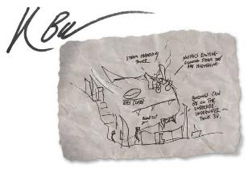

威世智 Wizards of the Coast 在 2002 年宣布了奇幻背景的搜索：呼唤龙与地下城的新世界。他们收到了成千上万的条目，包括最终成为艾伯伦的我的世界。我和 James Wyatt, Bill Slavicsek, Christopher Perkins，还有很多人一起工作，把我最初的想法发展成你们今天知道的艾伯伦。
我为我们创造的世界感到无比自豪。然而，有一些我喜欢的元素，我从来没有机会在一本官方书籍中探索。在第一次设计这个世界的时候，我把水生国家包括在内 — 考虑到人鱼、沙华鱼人和其他有智慧的海底物种可能建立的文明。我们为艾伯伦开发了一种独特的位面体系，它与公认的巨轮基底世界有着非常不同的味道。我们提出了这样一个想法：在人类到来之前很久，一个由哥布林组成的骄傲帝国就已经统治了科瓦雷。但是任何一本资料书的页数都是有限的，在我们最初的艾伯伦战役设置中，这些想法不得不被删减—或者在某些情况下完全删减。这些位面是存在的，但是没有足够的空间来描述它们，每个位面都不超过一段，这不足以理解是什么使费尼亚 Fernia 不同于火元素位面，或者你如何在玛伯尔 Mabar进行一次冒险。从规则的资料中，我们知道沙华鱼人存在，并有大使在风暴湾 Stormreach，但没有透露关于他们的文明。
从一开始，我就希望我们能看到关于位面的艾伯伦资源书，但它从来没有实现—当艾伯伦在 D&D 的第四和第五版回归的时候，资源书需要优先考虑关键的基础设置，而没有空间去探索这些隐藏的角落。所以，虽然我一直梦想着卓姆和位面在我的脑海里，但艾伯伦是威世智的知识产权，只有他们可以出版新的艾伯伦资源。这一切在2018年改变了，当威世智和我一起创建了艾伯伦寻路者指南 Wayfinder’s Guide to Eberron，一个在地下城主公会 Dungeon Masters Guild 网站上发布的 PDF 扩充 … 在艾伯伦的历史上，通过地下城主公会，任何人都可以为艾伯伦创建新的内容。第二年，在制作官方第五版精装本《艾伯伦：从终末战争复苏 Eberron: Rising from the Last War》时，设计团队扩展了摩洛矮人的故事。但是，再一次，没有足够的空间来关注他们与异变魔 daelkyr 的冲突以及下面王国的神秘。
这是和我一起在播客显能区域 Manifest Zone 工作的 Wayne Chang 的想法。我们一起草拟了一本书的计划，这本书深入探讨了许多我一直想探索的主题—位面、达坎和海底国家— 以及一些更近期的发展，如摩洛。就这样，这本书诞生了!
事实证明，写这么大的一本书是一项巨大的工作。Laura Hirsbrunner 作为编辑和布局设计师完成了艰钜的任务，而 Will Brolley 则开发了身临其境的怪兽、魔法物品、范型等等。由于在压力下工作是激发灵感的好方法，我非常感谢 Laura, Wayne 和 Will ，因为他们不断给予我反馈和灵感。
我们还与许多艺术家合作，为这本书发展原创艺术。从第3章开头的Katerina Poliakova对 泰拉•麦伦 Tira Miron 的精彩描绘，到Marco Bernardini 令人惊叹的每个位面的微缩视图的平面图，看到世界未被探索的这些方面变得栩栩如生，真是令人兴奋。在某些情况下，为了向艺术家传达一个概念，我把自己有限的艺术技能运用到工作中。下面是我在沉睡的卡尔拉萨 kar’lassa 附近建造的沙华鱼人城市的初稿—在第四章中，你可以看到 Vincentius Matthew 是如何理解我的草图的!
如果我没有召集艾伯伦玩家、DMs和创造者们，包括我们优秀的游戏测试人员，那我就太粗心了!当然，还有我才华横溢的妻子，富有创造力的合作伙伴，两家工作室的联合创始人，Jennifer Ellis — 她总是愿意谈论关于秘密鲨鱼人或和平位面 Plane of Peace 上的旅游景点的话题。
在我把这本书摆在你面前之前，有一个免责声明：当我在我的桌子上运行它时，这是一个艾伯伦的愿景。你会发现一些细节和以前的资料书不一致;使用哪一种由你决定。但是记住，总有第三种选择:使用你的答案。从一开始，大约20年前的今天，当我们选择不呈现哀伤咏叹 Mourning 的原因或揭示死亡龙纹 Mark of Death 的力量时，我们希望艾伯伦能够激励玩家和地下城主，而不是限制他们。这是一本让你建立想法的书—有些甚至你可能会忽略。这是我的艾伯伦，但我总是很兴奋看到人们把世界变成他们自己的。
而现在 —
艾伯伦正等着你!
（PS：这是作者签名）
